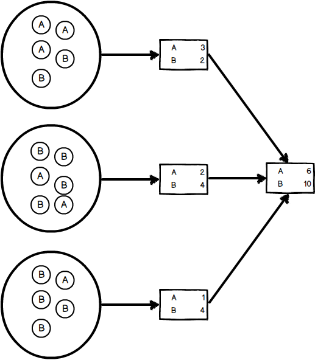
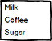
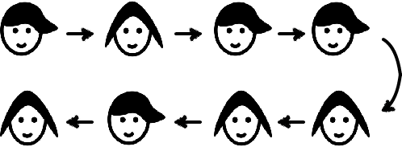
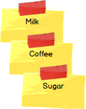
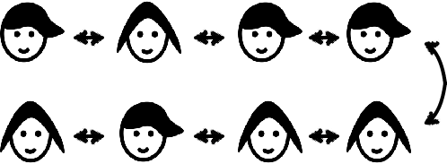
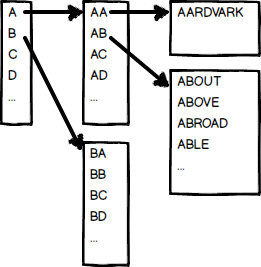
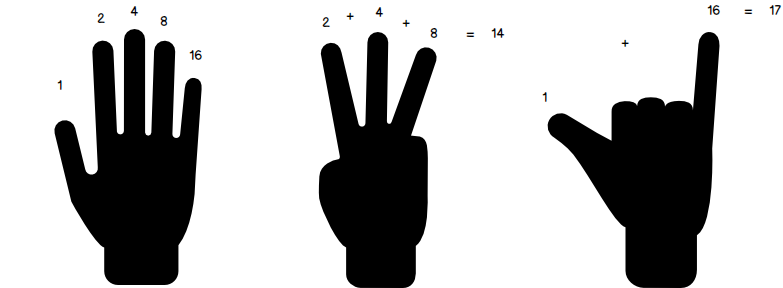

Programming Concepts in the Real World

There are many aspects to programming that are needed to write code. In this book we will focus only on some basic concepts that can be explained in isolation, and may be interesting for non programmers.
The goal is not to teach how to program, but to show what programming is about. What are some of the topics software engineer discuss, and which tools they use to solve problems.
Contributing
To suggest a topic, an improvement, or any sort of feedback, please create an issue in the GitHub repository.
Algorithms
Binary Search
Example
Dictionary
A person wants to look for a word in an English dictionary. They may open the book in any page, choose any word in it and compare it with the word they are looking for. Since the words are sorted they know in which way to proceed. They can now do this process over and over again until finding the wanted word.
Doing these steps will lead to the result sooner or later. But if instead of comparing any word, they compare with the word that is exactly in the middle of the acceptable range, the number of required comparisons is as low as it can be.

Guess Who?
The same idea can be applied to the children's game Guess Who?. The best strategy is to ask a question that will drop half of the possibilities.
On the other hand, asking a very specific question, it is very likely to get little information in most cases, and a lot in a few.
Properties
Binary Search is a list of steps that we can do to find a result in a collection. It is called "binary" because after each step, we should be able to keep only about half of the items in the collection.
In general, it is used on a list of sorted items, like words or numbers. But the same idea can be used any time we want to localize something, and we can reduce half of the possible results at a time.
Since half of the possibilities are dropped after each comparison, it is pretty fast to find what we are looking for in not so many steps. For a million items, we can localize any one in up to twenty comparisons. And for a thousand millions, up to 30.
Map/Reduce
Example
Elections
When a small group of people want to have an election where the vote is secret, each will write down their desired output, gather all together, shuffle and count the matching results.
This however does not work well for large groups of peopl, sinve it will take a long time to cast all votes and count them. Luckily, this is a problem that has already been solved by modern democratic states: they divide the people in groups, each group will cast their votes, a group member will count the results and summarize them in a single sheet of paper. All those sheets of paper are then submitted to a central person who adds up the votes to find the winner.
The act of counting each individual vote and write down a summary is called "map", while making an overall summary of all summaries is called "reduce".

Properties
The benefit of map/reduce is to divide a big problem into smaller ones that can be executed at the same time, and then the results combined.
Asymmetric Encryption
Example
Coffers and keys
Before the telegraph was created, the only way to transmit a message was to send an object with the message. The question is how to make sure nobody except the recipient reads the message. If the sender can agree with them in advance, they can give them a key to a coffer, and then send a message inside the coffer. We will assume the coffer cannot be opened without the key.
Now there is a post office that keeps open coffers whose keys belong to anyone interested in receiving messages. When a person wants to send a private message, they will ask the post office for a coffer. Now they will include their message in that coffer, and another open coffer inside of it, to which they own the key. The recipient can then reply privately using this second coffer.
Properties
With this system, anyone can establish a secure connection with anyone registered in the post office, or if they can somehow make a secure connection once, temporarily.
Data Structures
Array
Example
Grocery List
To make a grocery list you grab a sheet of paper and start writing from top to bottom what you need to buy. This is the simplest way of making a list.

Properties
Adding items to an array at the end is easy. And adding more capacity (including a second sheet of paper) is also possible.
It is not easy to add things in the middle of the list. It requires you to copy every item one line below to have the free space where you want the insertion.
Linked List
Example
Field trip
In a school field trip, stand all children in a line and ask them to remember who is to their right. Now, you remember who is in each of the edges.
Now at any point, you can ask the first child to point to the second, and then ask the second for the third, and so on. If you reach the last child then you are sure that your list is complete.

Properties
In this schema, it is easy to add something at any point in the list. If the list is sorted by some criteria, you can find where the insertion needs to happen and just ask the previous node to point to the new value and the new value to what the node was pointing at.
It is hard, though, to identify a node by its position. If you want to know the position of a node, you have to start from the first and count until you reach it.
Double Linked List
Example
Grocery List
This time, to make a grocery list we are going to write each item we want to buy in a post-it. We can now attach any item we want to add to the list on any position, which will help us to keep the list sorted in a convenient way.
We can also iterate the list from top to bottom or from bottom to top.

Field trip
In a school field trip, stand all children in a line and ask them to remember who is to their right and to their left. Now, you remember who is in each of the edges.
Now at any point, you can ask both of the edges to point to the next node, and continue until both iterations reach the same node.

Properties
Like in the linked list case, we can easily insert nodes anywhere in the list, but now we can iterate the nodes from either of the edges, but we are asking each node to remember more.
Hash Map
Example
Closet
When organizing a closet, people usually group clothing by type. You'll see a pile with t-shirts, a pile with pants, a socks drawer, etc. And now, whenever you want to grab something, you go to the bucket that should contain it, see all of the items in there and pick the right one.
Now, if we wanted to, we could add more granularity to the categories. Instead of having a socks drawer we can have a green socks drawer, another for red socks, another for white socks, and so on. As long as we know in which drawer the sock we are looking for is, we can look it up faster, since we will have less incorrect items in the drawer.

Socks made by Freepik from www.flaticon.com. Licensed under CC BY 3.0. Colored by Sebastian Waisbrot.
Properties
If we have enough buckets, we can add and look up any item really fast.
Btree
Example
Dictionary
Let's grab a dictionary, and insert in the first page an index that associates each letter with the page that letter's first word is. Now, at the begin of each letter, we can create another index for the combination of that letter and the next one in the word, and so on.
Now we can find out each word by following the index letter by letter, without any search.

Properties
A Btree allows you to have a hierarchy of index to follow to get the element you are looking for. The number of indices to follow grows with the number of elements, but at a much slower rate.
Databases
Consistency
Example
Civil Registry
A civil registry keeps records of citizen's vital events like births, marriages and deaths.
To define the Civil Registry as a consistent database, we need to make sure of the following:
Data inserted is always valid. For example, nobody can die more than once, and only people who was born can get married.
Any data that is written, will be stored and available when reading afterwards. No sheet can be lost or ignored.
We can say instead it is eventually consistent if we loosen the immediacy of the availability of written data. For example, if we have different offices where the events can be registered, a birth that is written in one may not be known in the other office until they eventually sync up. This must happen at some point, but its frequency can be arbitrarily set.
Atomicity and Isolation
Example
Bank Transfer
If a bank cashier wants to transfer money between two accounts, there are actually two operations: subtract the amount from one of the accounts and add it to the other one.
For these operations to be considered atomic, they need to happen both or neither. If money is added to one of the accounts, but the subtraction of the other one fails (for lack of funds, for example) the addition needs to be canceled.
For them to be considered isolated, nobody else should be able to check out the balances of the accounts during the operations with one of them executed and the other one not. Results must be available altogether.
SQL Injection
Example
Who's on First?
From Wikipedia:
"Who's on first?" is a comedy routine made famous by Abbott and Costello. The premise of the sketch is that Abbott is identifying the players on a baseball team for Costello, but their names and nicknames can be interpreted as non-responsive answers to Costello's questions. For example, the first baseman is named "Who"; thus, the utterance "Who's on first" is ambiguous between the question ("Which person is the first baseman?") and the answer ("The name of the first baseman is 'Who'").
Explanation
A SQL injection works by confusing the command that needs to be performed by introducing ambiguous terms modifying the grammar of the statement.
CAP Theorem
Example
Civil Registry
Supose a Civil Registry with five offices and phone lines between them. There are different ways of organizing. We are going to analyze two extremes.
# Highly available (AP)
Each of the offices can take new data from people and at the end of the day, they will share the information they received with all the other offices.
This could be a problem since it may allow invalid data, for example if a person is registered as dead in one office and the married in another one. If there was a single office, this would never happen since that person's registry will be kept up to date, but now we are allowing up to one day of stale information.
Other possible problem is what happens if one office suffers an accident or a natural disaster and some of its data from the day is lost. People who already left the office do not know the Registry lost it and will run into a problem in the future.
Highly consistent (CP)
In this other approach, any data change needs to be coordinated by all the offices. This way, all the data is always valid, available in every office, and no single one is responsible for its durability.
Problems may appear when the phone network becomes unreliable. If a single office phone is broken, all offices will stop working.
Properties
It is said that a distributed database can only be highly available or highly consistent. Different balances between both can be achieved, as a compromise, for different use cases.
Miscellaneous
TCP vs UDP
Example
Walkie Talkie
Two kids got a pair of Walkie Talkie, a handheld two-way radio. They are playing outside, in a large area. They soon realize sometimes the messages do not go through, but they keep playing and enjoying when they work.
Airplanes
A similar technology is used to communicate between airplains and the control tower. However, in this case, the reliability is really important, so there are strict protocols in place. When a command is given from the control tower, the airplane must not only acknowledge but repeat the message to make sure it was properly received.
Properties
Both TCP and UDP allow to communicate data, but the former allows the sender to know that the data was sent completely and correctly.
Encoding
Example
Finger counting
When people learn to count, they intuitively use their hand. Each finger that is lifted counts as one, then lifting three fingers represent the number three.
If we want to count to larger numbers we will run out of fingers when we reach ten. But we can assign different values to each one and the count to over one thousand.
For example, in our left hand the thumb can be worth one, the index finger can be two, the middle one four, the ring one eight and the pinky sixteen.
Now if we want to represent the number fourteen, we can lift the our three middle fingers.

Hands made by Freepik from www.flaticon.com. Licensed under CC BY 3.0.
Properties
To successfully encode and decode a value, it is necessary to agree on a representation. And the sender needs to know how to create this representation for any value, while the receiver needs to know how to read it to get the value.